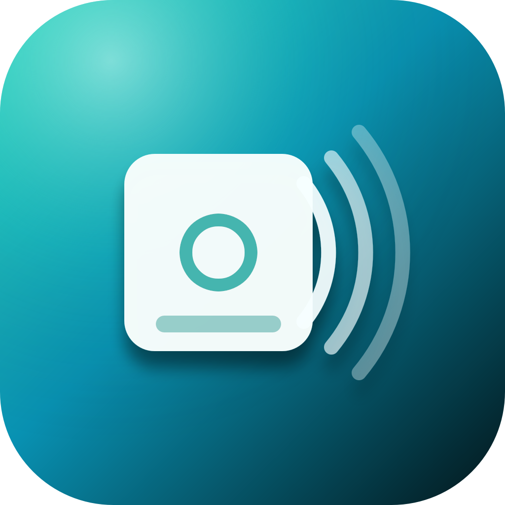

GitoCorp Studios
NFC Life
Graba una etiqueta, vincúlala a un objeto y no vuelvas a olvidar su mantenimiento.
Escribe etiquetas NTAG213/215/216
Vincula cada una a un objeto real de casa.
Encuentra cada objeto al instante
Acerca el móvil a la etiqueta para abrir su ficha.
Mantenimiento sin sorpresas
Avisos para revisiones, cambios de filtro o garantías.
Cada objeto, a un toque.
NFC Life convierte etiquetas NFC físicas en accesos directos a la información de cada objeto de casa: dónde está, cuándo se revisó por última vez y cuándo toca la próxima vez.
Lectura y escritura NFC
Compatible con etiquetas NTAG213, NTAG215 y NTAG216 para pegar donde haga falta.
Inventario claro
Cada etiqueta queda vinculada a una ficha con su objeto, notas y estado.
Recordatorios de mantenimiento
Programa avisos periódicos para que nada se quede sin revisar.
Privacidad de NFC Life
El inventario de etiquetas y objetos se guarda para uso personal, con la opción de sincronizarlo entre tus propios dispositivos mediante iCloud. La app solicita acceso a NFC solo para leer y escribir las etiquetas cuando lo pides.